현장 질의를 문서, 노하우, 설비 데이터 조회로 나눠 처리한 구조
문서 처리 · 인덱싱
강주빈
문서와 데이터를 다루는 구조를 먼저 만들고, 그 위에 조회와 질의 흐름을 얹습니다.
철강 제조 현장에서는 문서, 노하우, 설비 데이터를 한 흐름으로 묶었고, 문서 작업에서는 3계층 인덱싱으로 PDF와 이미지까지 함께 다룰 수 있게 정리했습니다.
대표 프로젝트
철강 제조 AI 어시스턴트
역할
문서 처리 · 인덱싱 · 실행 환경
주요 구조
멀티 에이전트 · 3계층 인덱싱 · 질의 구조화
역할
문서 처리 · 인덱싱 · 실행 환경
대표 과제
철강 제조 AI 어시스턴트 · 멀티모달 인덱싱
주요 구조
멀티 에이전트 · 3계층 인덱싱 · 질의 구조화
문서, 이미지, PDF를 문서 · 청크 · 요소 계층으로 적재한 방식
자연어 질문을 필드와 조건 중심의 조회 흐름으로 바꾼 실험
작업
주요 작업
최근 작업 세 가지를 중심으로 정리했습니다.
01
서비스 구조
현장 질문을 문서, 사례, 설비 데이터로 나눠 처리한 서비스
02
데이터 구조
문서와 이미지를 검색 단위로 쪼개 적재한 방식
03
질의 구조
자연어 질문을 조건형 조회로 바꾼 방식
작업 01
철강 제조 AI 어시스턴트
Router, Guidance, Knowhow, DT 네 개의 MCP 서버를 두고, 질문 한 번으로 작업표준서, 노하우, 설비 데이터를 함께 조회하도록 만든 철강 제조 현장용 도구입니다.
흩어져 있던 문서와 설비 데이터를 한 흐름에서 보게 했습니다.
- 4 MCP 서버 분리
- 도구 선택형 에이전트
- NL2SQL 5단계 파이프라인
- 호출 기록 추적
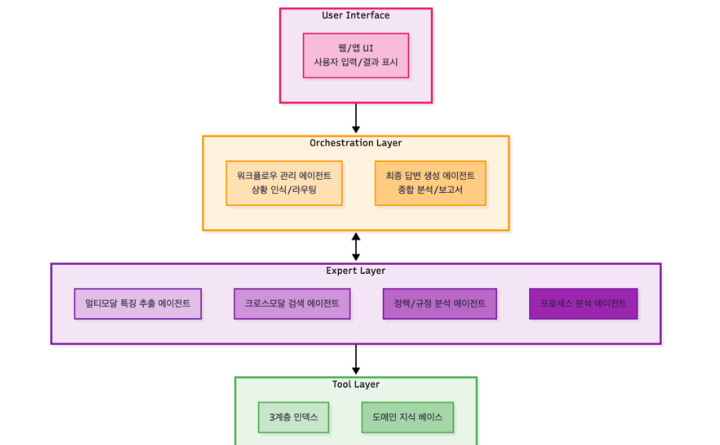
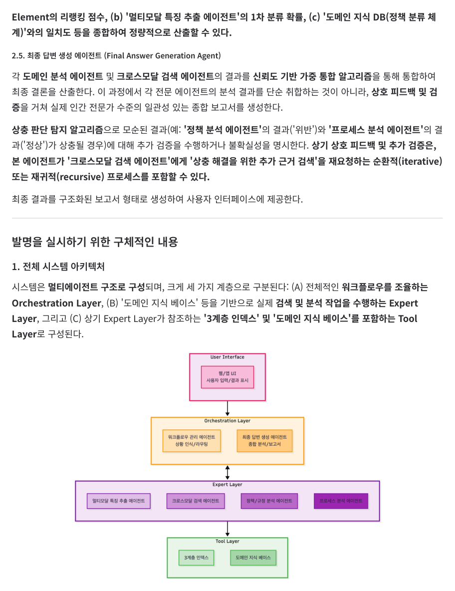
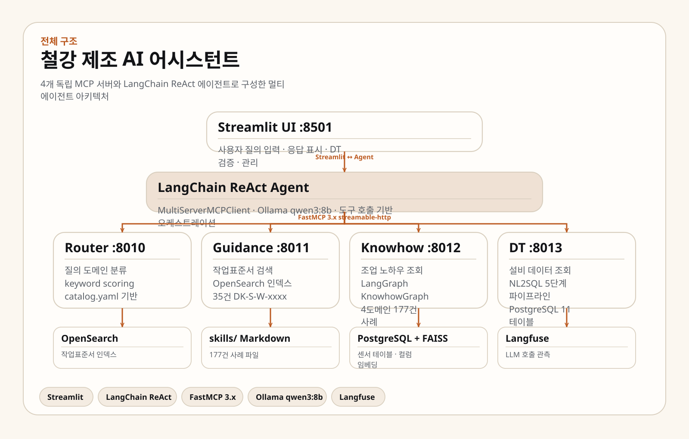
왜 필요했나
현장 질문은 작업표준서, 조업 노하우, 설비 데이터를 같이 봐야 답이 나왔습니다. 검색 하나로 다 처리하기 어려웠고, 설비 조회는 별도 규칙도 필요했습니다. 그래서 문서 검색과 데이터 조회를 한 질의 흐름 안에서 묶었습니다.
맡은 일
- 4개 MCP 서버 구조 설계와 에이전트 연결
- DT 서버의 NL2SQL 5단계 흐름 설계와 구현
- KnowhowGraph 기반 노하우 조회 흐름 구현
- FastMCP 3.x 기반 서버 분리와 배포 구성
- 호출 기록 수집과 피드백 흐름 연결
핵심 구현
- 엔티티와 의도를 나눠 뽑는 2단계 파서 구성
- 4개 서버를 HTTP 기반 MCP로 분리
- 로컬 LLM(qwen3:8b) 추론 환경 구성
- 호출 기록과 피드백 수집 체계 연결
작업 02
멀티모달 RAG 인덱싱
문서, 이미지, PDF를 한 체계에서 다루기 위해 3계층 인덱싱과 OpenSearch 적재 흐름을 만든 작업입니다.
문서 형식이 늘어나도 같은 구조로 적재할 수 있게 정리했습니다.
- 문서 · 청크 · 요소
- 메타데이터 추출
- OpenSearch 적재
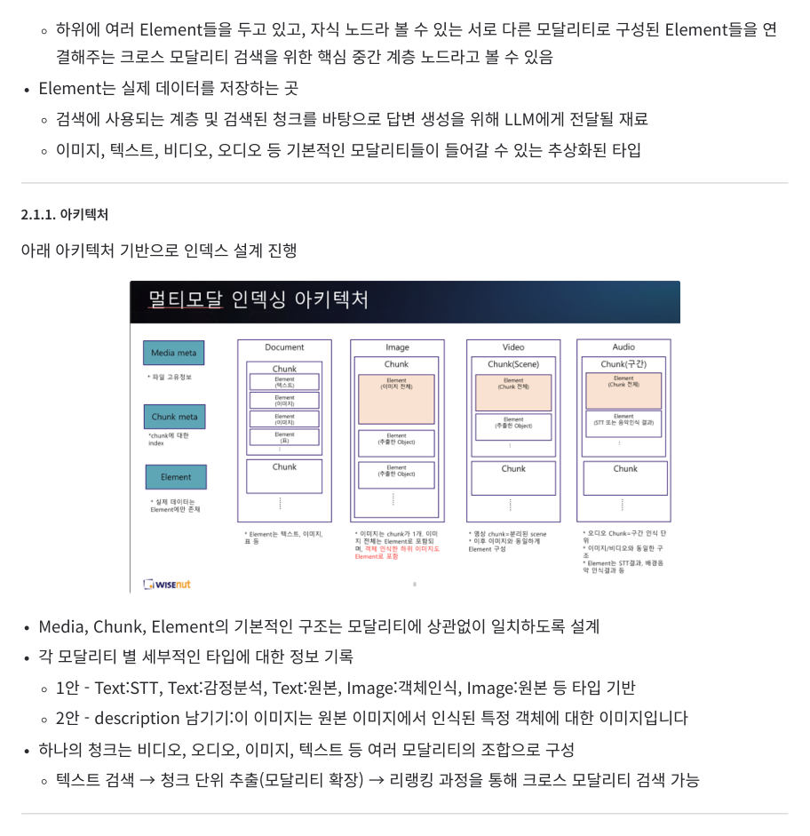
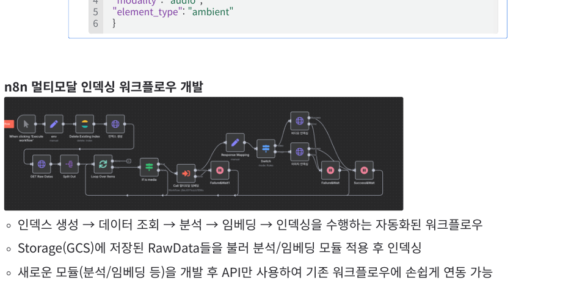
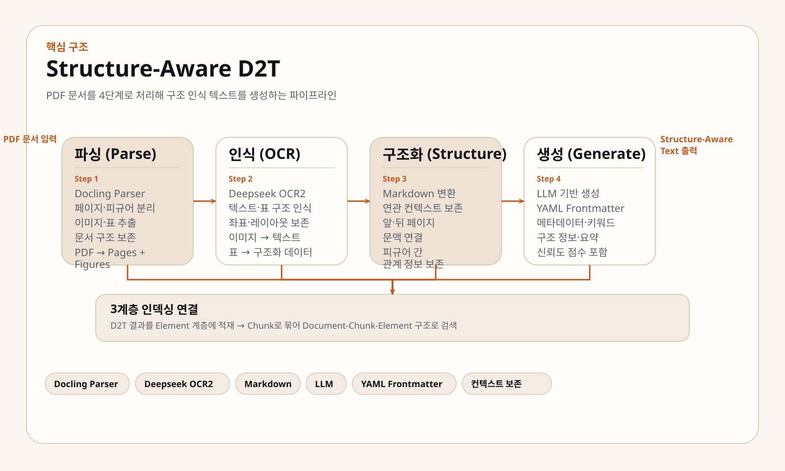
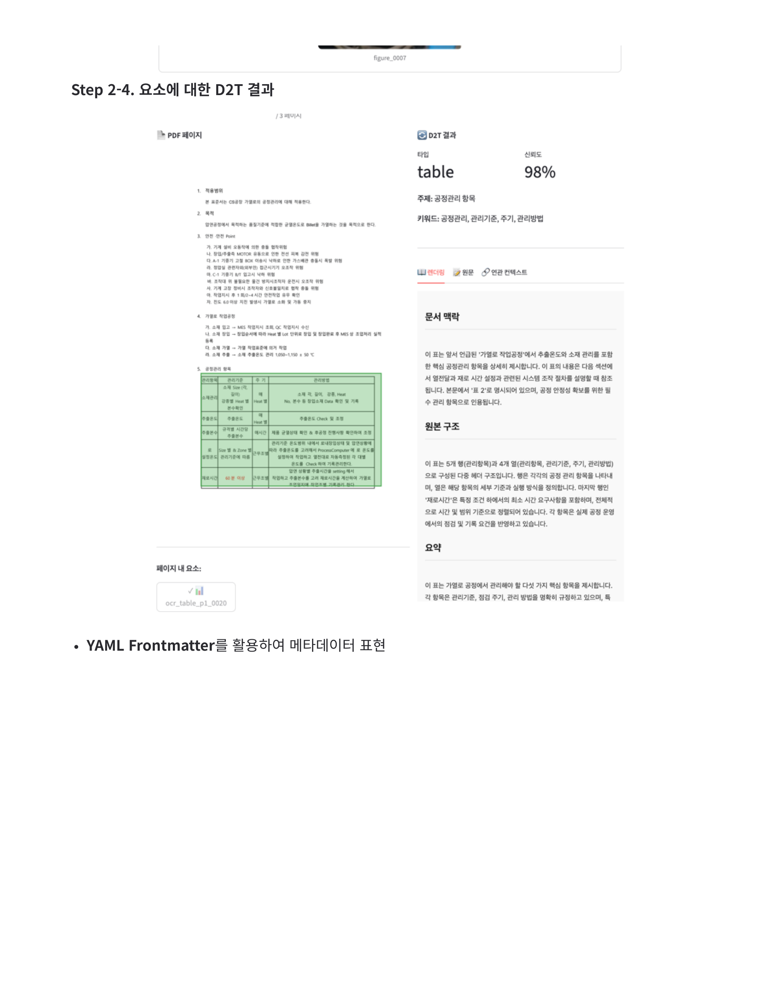
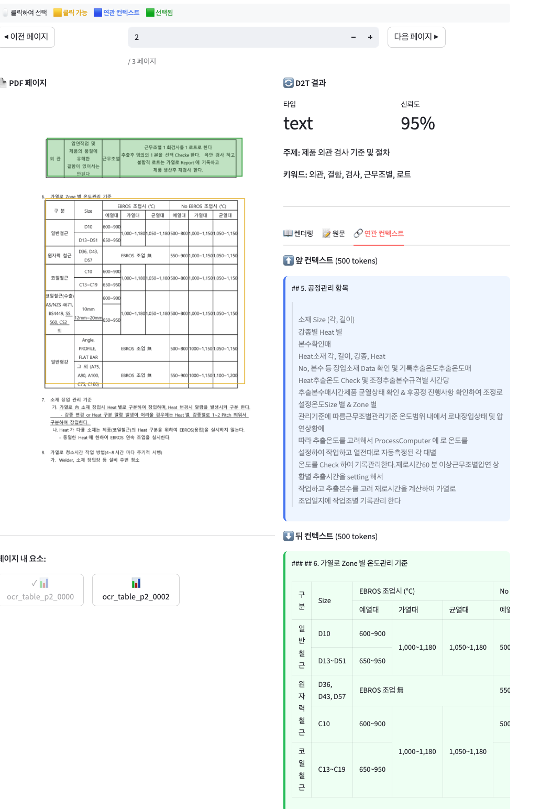
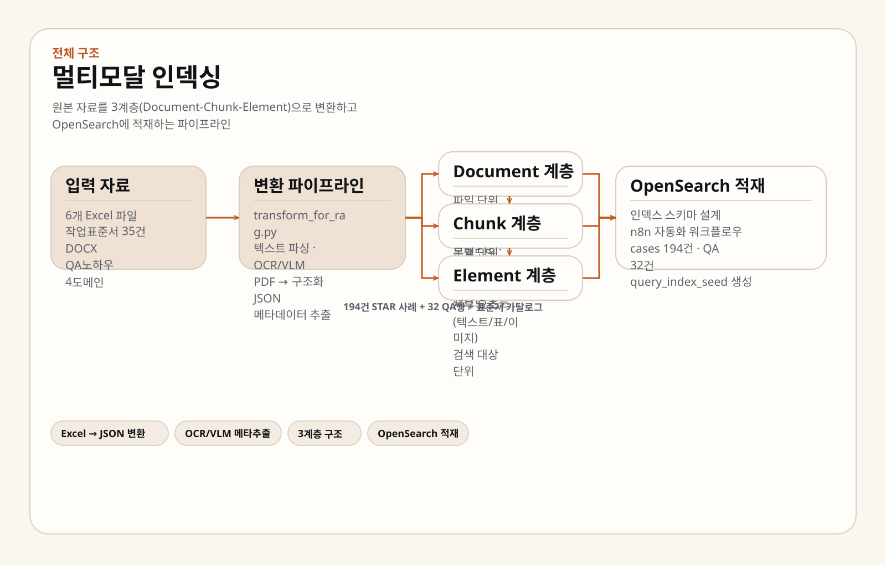
왜 필요했나
문서와 PDF에는 텍스트, 표, 이미지가 혼합되어 있고, 검색 대상도 문서 단위와 세부 요소 단위가 동시에 필요했습니다. 단순 청킹만으로는 재사용이 어려워서, 메타데이터를 기준으로 적재 구조를 다시 잡았습니다.
맡은 일
- Document-Chunk-Element 3계층 인덱싱 구조 설계
- 텍스트, 이미지, PDF 처리와 OCR/VLM 메타데이터 추출
- OpenSearch 스키마와 인덱싱 모듈 설계
- Excel → JSON 변환과 n8n 자동 적재 흐름 구성
- 표, 이미지, 차트 대상 D2T 처리 PoC 진행
남은 결과
- 문서 형식이 달라도 같은 적재 구조 유지
- 사례, QA, 표준서 데이터를 한 인덱스 체계로 관리
- D2T 결과를 요소 계층에 적재하는 방식 검증
작업 03
지역정보 질의 구조화
자연어 질문을 도메인, 필드, 값으로 나눠 조건형 조회로 바꾸는 작업입니다. 이후 철강 DT 조회를 설계할 때도 이 흐름을 바탕으로 삼았습니다.
복합 조건이 섞인 질문도 단계별로 쪼개 다룰 수 있게 했습니다.
- 도메인 분류
- 필드 선택
- 조건 조합
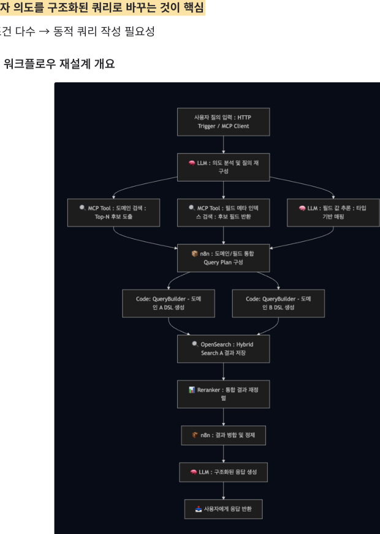
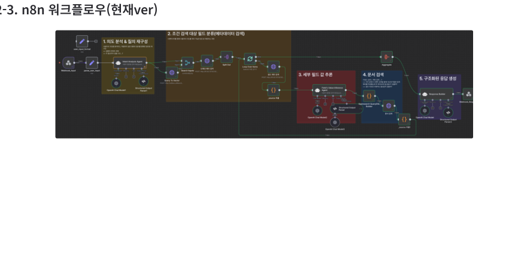
왜 필요했나
지역정보 조회는 주차장, 화장실, 드라이브스루처럼 복합 조건과 위치 조건을 함께 처리해야 했습니다. 자연어 문장을 그대로 조회하면 결과가 흔들려서, 질의를 조건형 구조로 바꾸는 과정이 필요했습니다. 이때 만든 방식이 이후 다른 도메인에도 그대로 이어졌습니다.
맡은 일
- 의도 분석과 도메인 분류
- 도메인·필드 메타 검색과 값 추론 구조 설계
- DSL 쿼리 생성 흐름 설계
- 도메인 추가를 고려한 메타데이터 구조 정리
남은 결과
- 질의 처리 단계를 하나씩 확인할 수 있게 정리
- 복합 조건 조회를 안정적으로 제어
- 메타데이터와 쿼리 빌더만 바꿔 다른 도메인에 확장
작업 방식
데이터 구조 먼저
작업 방식
질의를 단계로 나누기
작업 방식
문서와 데이터를 함께 보기
구조
핵심 구조
작업 전반에서 반복해서 쓴 구조 두 가지를 정리했습니다. 문서를 어떻게 나누고, 질의를 어떻게 통제할지에 집중했습니다.
3계층 인덱싱
문서 전체와 세부 요소를 같이 다루기 위해 세 계층을 같은 체계 안에서 연결했습니다.
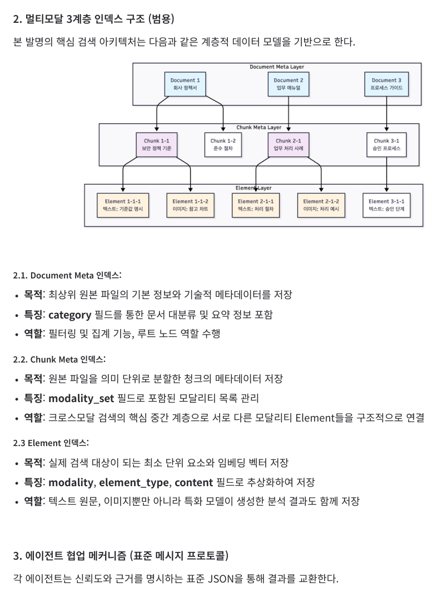
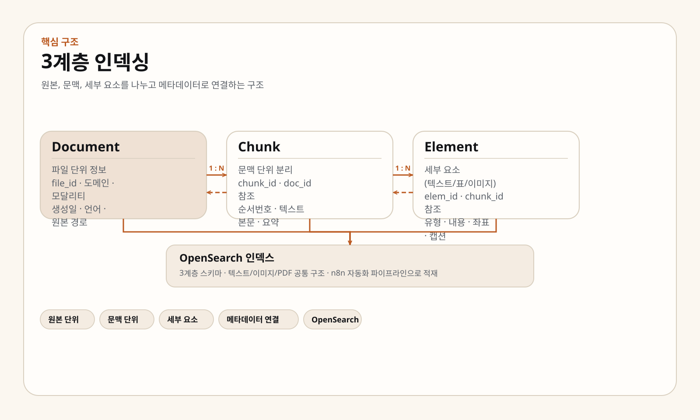
- 문서 / 청크 / 요소
- 텍스트 · 이미지 · PDF 공통 구조
- OpenSearch 스키마와 자동화 파이프라인
- D2T 결과도 요소 계층에 함께 적재
문서 전체와 세부 요소를 같이 다루기 위한 바탕 구조입니다. Guidance 서버와 인덱싱 작업이 모두 이 틀 위에서 움직입니다.
NL2SQL 5단계 파이프라인
자연어 질문을 바로 SQL로 넘기지 않고, 해석 → 확인 → 조합 → 실행 → 정리 다섯 단계로 나눴습니다. 질문을 먼저 풀어 쓰고, 조건을 정리한 뒤 SQL을 만들고, 마지막에 결과를 다시 읽기 쉬운 답으로 바꿉니다.
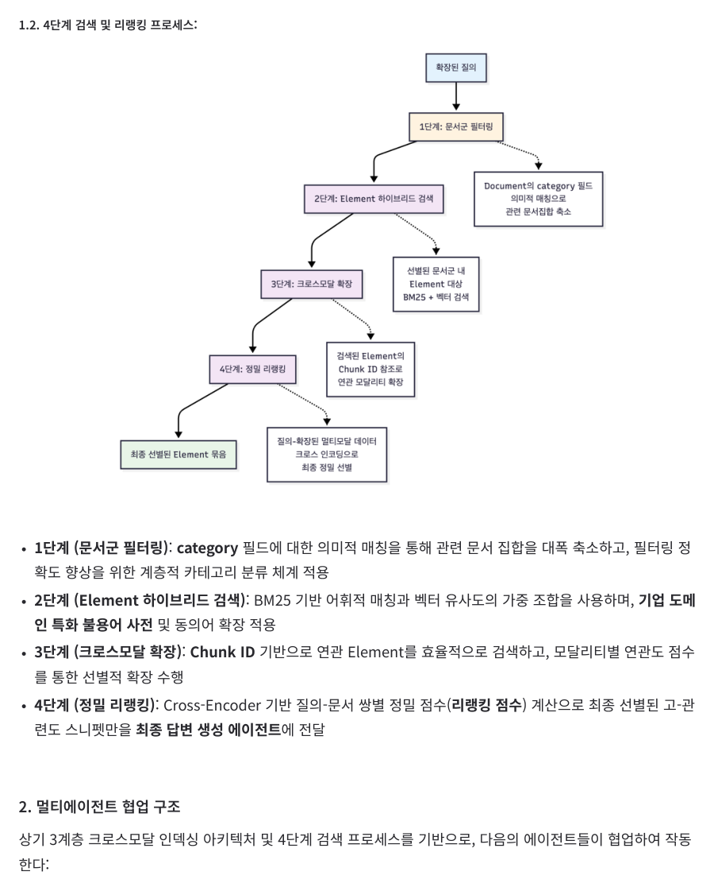
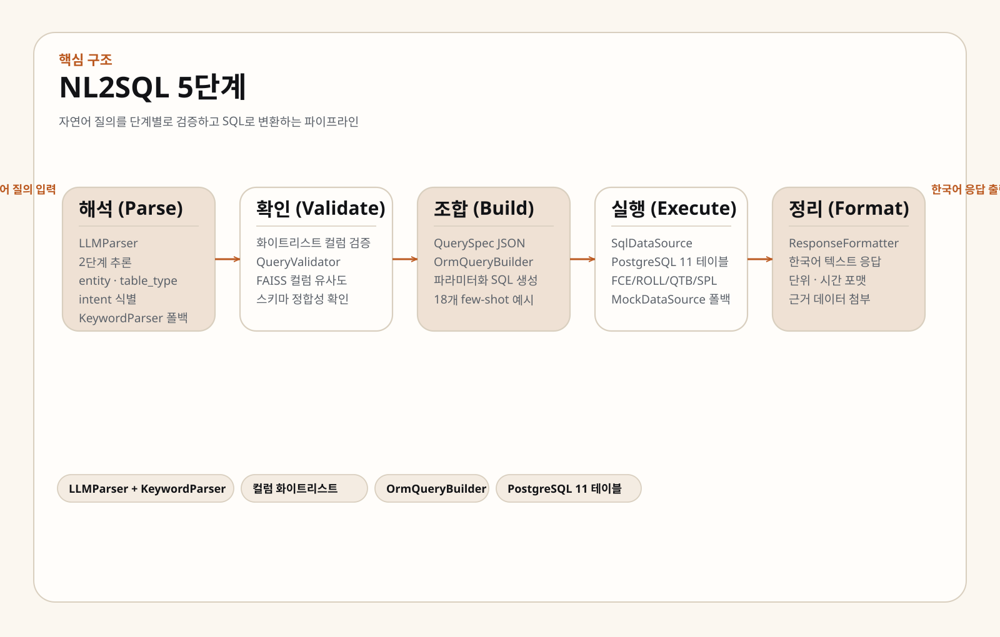
- 질문을 두 단계로 해석하고, 실패 시 키워드 방식으로 폴백
- QuerySpec JSON → ORM 빌더 → 파라미터화 SQL
- 설비 테이블 (가열로 / 압연 / 냉각대 / 스풀러)
- FAISS 기반 컬럼 후보 보강
질문을 단계별로 확인하면서 SQL로 바꾸는 흐름입니다. DT 서버와 질의 구조화 작업이 여기서 이어집니다.
원본, 문맥, 세부 요소를 분리해야 문서 처리와 조회를 하나의 체계로 다룰 수 있습니다.
자연어 문장을 그대로 넘기지 않고, 도메인과 조건으로 분해하는 흐름을 설계했습니다.
경험
최근 경험
최근에는 문서 처리와 인덱싱, 질의 흐름 설계에 집중했고, 그 전에는 백엔드와 운영 기반을 쌓았습니다.
2025.05 — 현재
와이즈넛 · AI연구소
연구원 · AI 소프트웨어 엔지니어
철강 제조 AI 어시스턴트, 문서 처리 파이프라인, 인덱싱 구조, 실행 환경 구축까지 담당했습니다.
- 생성형 AI 기반 문서 처리·인덱싱·자동화 시스템 설계 및 구현
- 철강 제조 AI 어시스턴트와 멀티모달 RAG 과제 수행
- 멀티모달 D2T 변환 기술 연구와 PoC 파이프라인 구현
- OpenSearch, n8n, Kubernetes 기반 데이터 처리와 실행 환경 구축
2025.02 — 2025.04
LinkPay · SSAFY
백엔드 엔지니어 · 6인 팀 프로젝트
결제 흐름과 품질 관리를 같이 맡은 팀 프로젝트였습니다.
- Web-NFC 기반 결제 구조 설계와 백엔드 구현
- NFC 태그 데이터 구조 최적화
- 테스트 선행 작성과 품질 문화 전파
2023.06 — 2023.11
Coclimb · SW Maestro
팀장 · 백엔드
검색 기능과 백엔드 운영을 함께 맡았습니다.
- Elasticsearch 기반 초성 검색, 자동완성, 오타 교정 구현
- Logstash 기반 검색 색인 파이프라인 구축
- AWS 운영 환경, 테스트, API 문서화까지 전체 백엔드 리드
학력 · 기술
학력과 기술
물리학과 컴퓨터공학을 함께 공부했고, 이후 데이터 처리와 백엔드, AI 시스템 쪽으로 무게를 옮겼습니다.
세종대학교
물리천문학과 · 컴퓨터공학과 학사
2018.03 — 2024.02
이론과 구현을 같이 다루는 기반 위에서 문서 처리, 검색, 백엔드 쪽 경험을 쌓았습니다.
SSAFY 12기와 SW Maestro 14기를 수료했습니다.
언어
- Java
- Python
- C
- JavaScript
검색 · 백엔드
- Spring Boot / JPA / QueryDSL
- MySQL / PostgreSQL
- OpenSearch / Elasticsearch
- SQLAlchemy / FastAPI
AI · 인프라
- LLM / RAG / FastMCP
- LangChain / LangGraph / Streamlit
- Ollama / FAISS / Langfuse
- n8n / Docker / Kubernetes / AWS